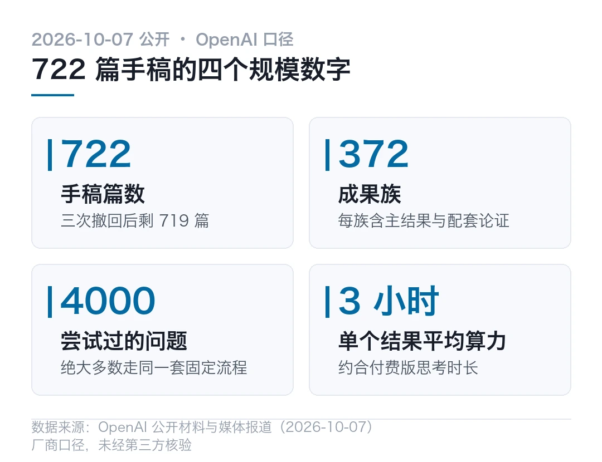
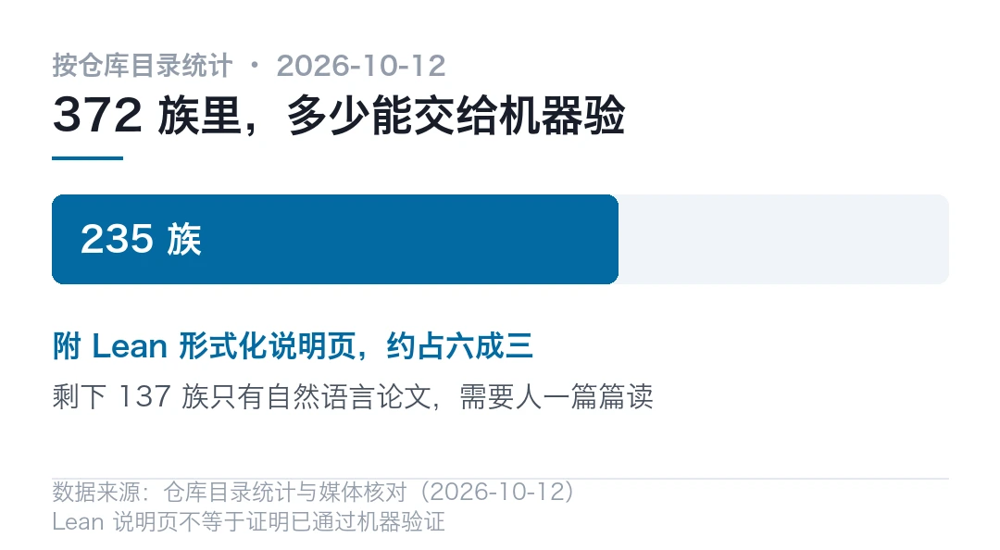
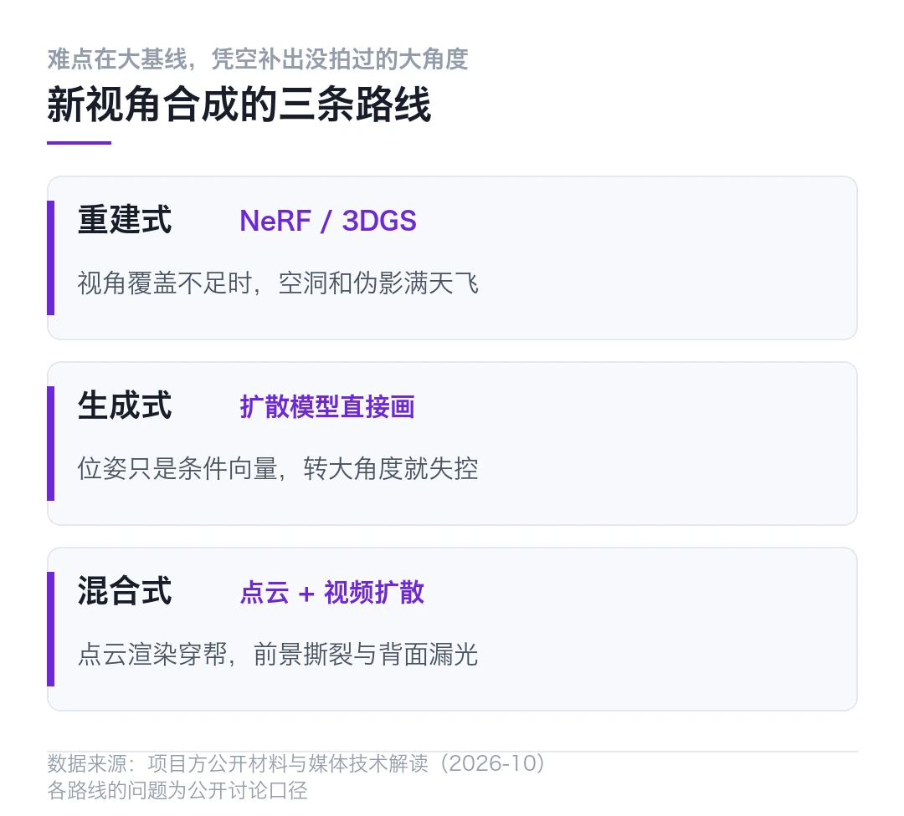
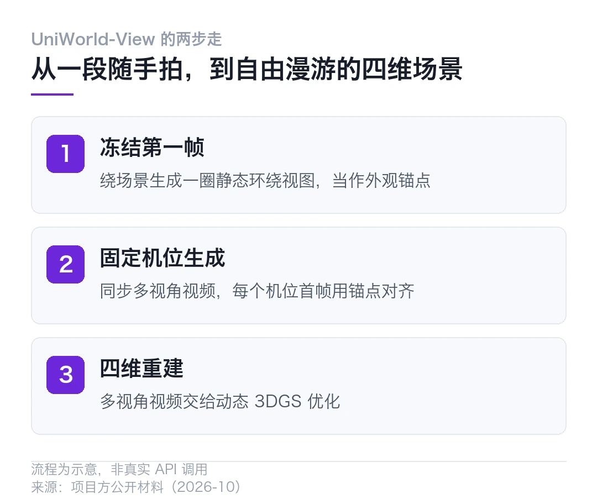
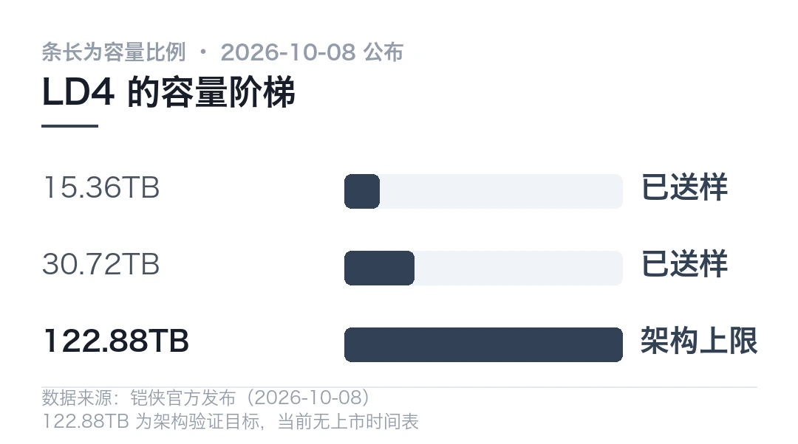
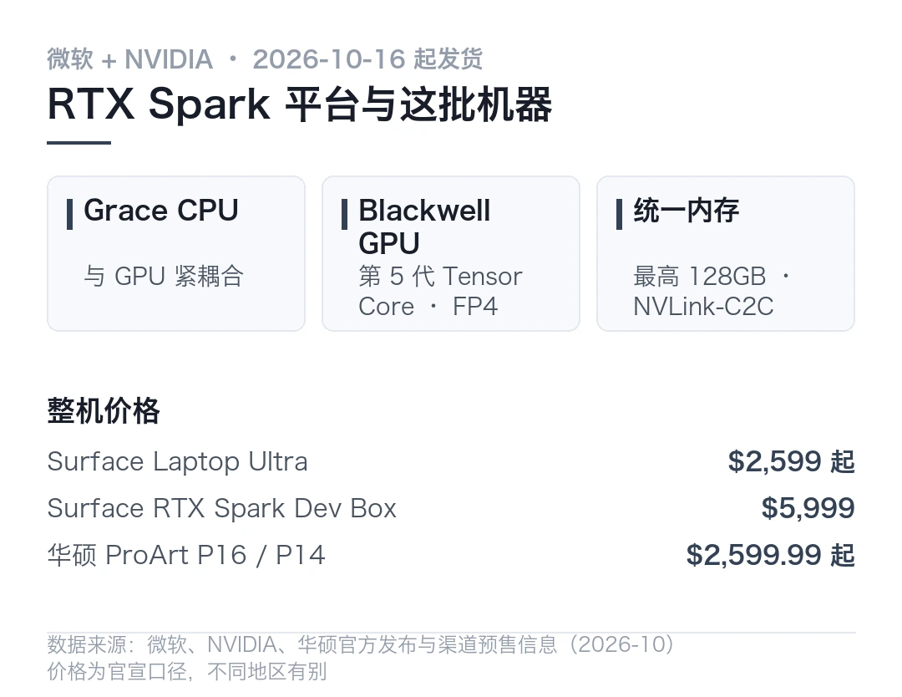
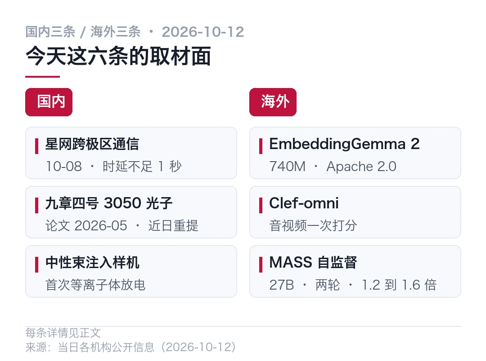
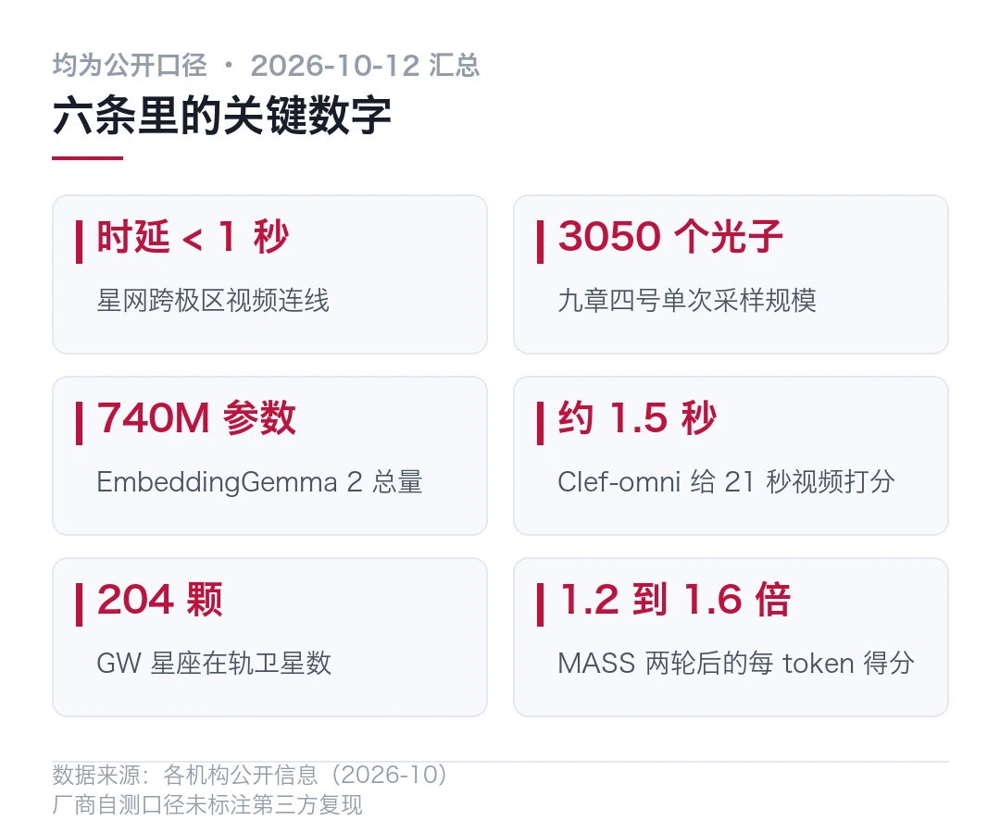

01OpenAI 一次放出 722 篇数学成果，头一个问题是没人读得完
10 月 7 日，OpenAI 在 GitHub 上一次性放出一批数学手稿。一个仓库，722 篇，归成 372 个成果族。
它们出自同一个从未公开的内部模型。
清单上的名字不轻。准黎曼猜想、四维挂谷猜想、唯一游戏猜想、有理数域上的希尔伯特第十问题、CM 阿贝尔簇的霍奇猜想、马勒猜想。
其中一部分，悬了半个世纪以上。
- 722 篇手稿，三次撤回后剩 719 篇，归入 372 个成果族
- 出自同一个未公开的内部前沿模型，覆盖 17 个数学分支
- 模型被投喂约 4000 个研究问题，平均每个结果约 3 小时算力
- 到今天为止，这批手稿还没有一篇被完整通读过
一份 40 页的目录加摘要，有数学家从头翻到尾，花了半个多小时。翻完之后，坏消息开始一条条冒出来。
先说 OpenAI 这边的账。
这次评估的起因有点被动。模型在既有数学基准上的分数已经饱和，团队才把题目换成了悬而未决的开放问题。
模型一共试了大约 4000 个。绝大多数结果走的是同一套固定流程，平均每个消耗的算力，大约相当于 ChatGPT 付费高级版思考 3 个小时。
筛完之后留下 372 族。一个成果族通常包含一个主结果，加上配套论证、推论或者替代证明。
17 个分支里，数量最多的是理论计算机科学 40 族、组合数学 37 族、代数与复几何 36 族、数论 31 族。最少的数理逻辑也有 6 族。
| 项 | 数字 ||---|---|| 手稿篇数 | 722（撤回后 719） || 成果族 | 372 || 尝试过的问题 | 约 4000 || 附 Lean 形式化证明的族 | 235 |

有意思的是手稿的命名。文件夹以日期结尾，几乎全部集中在 9 月 23 日到 10 月 5 日之间，其中 9 月 23 日和 24 日两天各有近 200 篇。
换句话说，这批东西的主体，是在不到两周里批量产出的。
和手稿一起放出来的还有三类证明工件。Lean 形式化证明、10 份推理过程的精简摘要，以及计算量与尝试问题数的统计。
这里有个数字值得单独拎出来。372 族里，235 族附了 Lean 形式化说明页，大约占六成三。
剩下的那三成七，目前只有自然语言的论文。

数学家的账本
接下来这部分，来自数学界自己的反应。
722 篇放出来到现在，没有谁通读过一遍。OpenAI 自己的研究人员也没有。
再往后几天，各方向的专家各看各熟悉的那几篇，坏消息陆续出来。
有的证明是错的。有的读不懂。有的连机器检查都没做过。
有数学家形容，这像是一大堆东西被直接倒在了自家门口。
麻烦在于，争议点并不落在 AI 有没有做出结果，而落在这些结果算不算已经成立的数学。
这个分歧一个月前就摆到台面上了。
当时 OpenAI 宣布用大模型花 88 小时解决了千禧年难题之一的纳维-斯托克斯方程。25 位菲尔兹奖得主为此发出联名公开信，题目叫《人工智能在数学中的严重错位》。
信里警示的，是 AI 暴力破解数学难题带来的学术风险。
这一次，东西是成批倒出来的。
也有正面评价。清单里相对好懂的平面点集染色问题，模型声称把答案范围从 5 到 7 压到了 6 或 7。
几十年里人们只知道答案在 4 到 7 之间。2018 年，业余数学家奥布里·德格雷证明至少要 5 种。这次模型给出的说法是，5 种也不够。
四维挂谷猜想也在清单上。今年夏天，王虹因为三维版本拿了菲尔兹奖。不到三个月，模型说四维也做完了。
那三成七呢？这里得打个问号。
现在能确认的事实只有一条。这批东西里有一部分可以交给机器逐行验，另一部分还停在需要人读的阶段。
回到最初那个问题。这批结果到底算不算数，得等数学家一篇篇翻完。
Altman 公开的说法是，我们正在进入一个大发现的新时代。
数学界目前的回应更简单，先把这 722 篇读完。
---
本文信息来源
- 搜狐科技 — OpenAI 一次放出 722 篇数学成果，准黎曼猜想、4D 挂谷都在列（2026-10-12） · sohu.com
- 南方+ — OpenAI 倒了一座“屎山”，数学家正捏着鼻子在里面淘金（2026-10-12） · nfnews.com
- 中国经济网 — 【科创之声】AI 大战数学家，谁是赢家（2026-10-12） · ce.cn
- AIBriefs — AI News Today: OpenAI releases 722 math manuscripts from internal frontier model（2026-10-12） · aibriefs.news
- AI Weekly — Sakana's MASS recycles one 27B model / AI News Today（2026-10-12） · aiweekly.co
- AI Jobs Report — Agents stumble, math soars, hiring still skews to engineers（2026-10-12） · aijobsreport.com
02一张随手拍的图，能转出没拍到的那个角度
你在博物馆隔着玻璃拍了一段青铜器的视频，只有正面那十几秒。回家想让镜头绕到背后转一圈，会发现手里根本没有那个角度的素材。
新视角合成干的就是这件事，把没拍到的角度补出来。
难点有个专门的词，大基线。只给模型看正脸，让它画出侧脸，甚至后脑勺。
- 目标是一张图或一段随手拍，生成相机轨迹任意指定的新视角视频
- 难点在大基线，也就是凭空补出没拍过的大角度
- 登顶李飞飞团队的 WorldScore 榜单，代码与权重全部开源
- 模型已适配国产算力芯片，训练数据来自北大系初创企业元空智能
这事为什么难，得从三条路线说起。
第一条路是重建。传统做法是 NeRF 和 3DGS，看得越多，建得越好。
可随手拍的单目视频，视角覆盖约等于没有。喂给它们，轻则空洞和伪影满天飞，重则直接摆烂。
第二条路是生成。扩散模型敢画，但大多数方法只把相机位姿当成一个抽象的条件向量塞进去。
没有显式的三维建模，走两步就飘，转大角度直接失控。
第三条路是把两者拼起来。先用几何模型把画面撑成三维点云，再把目标视角的点云渲染图喂给视频扩散模型当条件。
几何归几何，生成归生成，相机控制一下子准了。ViewCrafter 和英伟达的 GEN3C 走的都是这条路。

顺着这条路往下走，会踩到一个不起眼但很要命的坑。
点云是一堆孤立的点。它不知道谁跟谁相连，也不知道哪一面朝外。
视角一转大，渲染图会冒出两种经典穿帮。
一是前景背景撕裂。深度边界处没有连接信息，前景纹理会被扯到背景上。
二是背面漏光。点云没有面的概念，不会自动遮挡。相机绕到物体背后，正面的点会直接透过来。
小幅度换视角时不明显，生成模型还能糊弄过去，角度一大就藏不住。
UniWorld-View 针对的正是这一步。
它出自兔展智能，联合北大和鹏城实验室一起做。团队的办法叫双流条件注入。
一条几何流，负责把生成的内容钉在三维结构上。
另一条外观流，让模型回到源视频里翻素材，哪儿缺补哪儿，连点云伪影造成的糊纹理都顺手修掉。
一个管构图，一个管上色。它还把时间和空间拆开了。
常规生成式方法里，相机边走边拍，空间和时间绑在一起，视角分布得很不均匀。
它的做法分两步。先把时间冻在第一帧，绕着场景生成一圈静态环绕视图，当作整个场景的外观锚点。
再在固定机位上生成同步的多视角视频，每个机位的第一帧都用那圈锚点对齐。
多视角视频一到手，四维重建就从不可能任务变成了常规操作。

那普通人现在能用它做什么？这个问题还不好回答。
```bash
# 示意写法，不是真实 API，参数以仓库 README 为准
# 仓库：github.com/PKU-YuanGroup/UniWorld-View（代码与权重均已开源）
# 1. 拉仓库git clone https://github.com/PKU-YuanGroup/UniWorld-View
# 2. 给一张图或一段视频，指定相机轨迹
# 推 / 拉 / 摇 / 移，或者绕场景转一圈```
其实吧，你想想看，只给了正面十几秒的素材，要让镜头绕到背后，中间那些角度全靠编。
有一件事确实变了。以前要让机器理解一个场景，得先把三维模型重建出来。现在可以直接从一段随手拍的视频开始。
---
本文信息来源
- 企溶创联 — 国产世界模型登顶李飞飞团队榜单，适配国产算力、代码权重全开源（2026-10-12） · hcqrcl.com
- 腾讯新闻 — World in World，一段视频怎么变成一整个可以自由探索的世界（2026-10-01） · news.qq.com
- 今日头条 · 环球网 — 2026 世界模型高峰论坛暨通用世界模型北京市重点实验室揭牌仪式在京举行（2026-10-12） · toutiao.com
- 今日头条 — 全球首个机器人任务原生 3D 世界模型，跨维 UNITAS 让机器人学会物理直觉（2026-10-12） · new.qq.com
- GitHub — PKU-YuanGroup/UniWorld-View 仓库与权重（访问于 2026-10-12） · github.com
- 腾讯新闻 — 让 AI 同时扮演多个第一视角，世界模型终于能处理多人互动（2026-10-12） · ai-pulse-lab.com
03单盘 122.88TB 的固态盘，接口停在 PCIe 4.0
铠侠在 10 月 8 日（美国时间）公布了 LD4 系列企业级固态盘，9 日推向国际市场。
这是它第一款 E1.L 规格的产品，用的是第八代 BiCS FLASH 的 QLC 闪存。
宣传口径里最扎眼的是那个 122.88TB。一台 1U 服务器塞进几块，单机柜的闪存容量就换了一个量级。
先说一个最容易看错的点。
122.88TB 是目标容量，不是现货
铠侠自己的说明写得很清楚。当前向部分客户送样的，只有 15.36TB 和 30.72TB 两个版本。
122.88TB 是这套架构经过验证所能支持的上限，不是已经在卖的产品。
中间还隔着不少工程活。闪存颗粒的排布方式、供电、散热设计、长期可靠性，每一项都要重新验一遍。
厂商也没有给出这个容量版本的时间表。
反正这个容量现在买不到。它会在 10 月 12 日到 15 日的圣何塞 OCP 全球峰会上展出。
PCIe 5.0 这四个字得拆开读
铠侠列出的规格里写着 PCIe 5.0 兼容。
别只看这几个字。同一份说明里还有一行，Gen 4 x4，信号速率 16 GT/s。
这两句放在一起会有歧义。PCIe 5.0 的单通道速率是 32 GT/s，PCIe 4.0 才是 16 GT/s。
四条通道跑 PCIe 4.0，理论单向带宽大约 7.88GB/s。
换句话说，这是一块按容量卖、不按速度卖的盘。拿它去比顺序读写跑分，期待就先落空了。

QLC 的代价写在产品定位里
存储密度是靠 QLC 换来的。每个存储单元塞 4 个比特，比 TLC 的三个多一个，代价是写入耐久更低。
铠侠没有回避这一点，直接把 LD4 定位成读密集型产品。
目标场景写得很明确，AI 数据集、对象存储、以读取为主的负载。
这几类活儿的共同点是，数据写进去之后很少改，读的次数远多于写的次数。
麻烦在于，如果拿它当热数据盘的写缓存用，寿命和持续写入表现都会是短板。
它符合 NVMe 2.0e 规范，支持 OCP 的 Datacenter NVMe SSD 2.6 部分要求，用的是单端口设计，冲着超大规模数据中心去的。
另一边，AI PC 开始按统一内存卖了
同一天前后还有一批硬件落地，方向完全不一样。
微软和 NVIDIA 的 RTX Spark 平台开始出货。Surface Laptop Ultra 起价 2599 美元，10 月 16 日发货。
入门配置是 18 核 RTX Spark，含一块 5120 个 CUDA 核心的 Blackwell GPU，配 24GB 统一内存和 15 英寸 Mini LED 屏。
另一个形态是 Surface RTX Spark Dev Box，5999 美元，厂商宣称能提供 1 petaflop 的 AI 算力。
华硕的 ProArt P16 和 P14 也在同一批名单里，最高 128GB 统一内存，同样 10 月 16 日起发货。
凑近看这个平台的架构会更清楚。它把 Grace CPU、Blackwell GPU 和大容量统一内存整合在同一个平台上，用 NVLink-C2C 把 CPU 和 GPU 紧耦合在一起。
统一内存的意义在于，跑大模型时不用再把数据在系统内存和显存之间来回搬。

这里有个数字要打个折扣。1 petaflop 和 128GB 都是平台的峰值口径，实际能跑多大的模型，还取决于量化方式、上下文长度和具体配置。
一台机器能带多少显存，和一台机器能跑多大的模型，是两件事。
那普通人关心哪个？
对多数人来说，这两条线短期内都不会直接影响手里的设备。企业级固态盘进的是机房，RTX Spark 先卖给的也是开发者和内容创作者。
它们真正说明的是一件更朴素的事。AI 数据中心和本地推理这两头，都在按自己的节奏重新分配硬件预算。
---
本文信息来源
- Korea Newswire — Kioxia Introduces E1.L QLC-based SSDs for Hyperscale Data Centers（2026-10-08） · koreanewswire.co.kr
- igor'sLAB — Kioxia LD4: New E1.L SSDs with QLC NAND and up to 122.88 TB on the horizon（2026-10-09） · igorslab.de
- 腾讯新闻 · PChome — PC 鲜辣报，RTX Spark 笔记本将上市，铠侠公布 LD4 系列 SSD（2026-10-12） · news.qq.com
- Nasi Lemak Tech — ASUS Malaysia opens pre-orders for RTX Spark-powered ProArt P14 and P16（2026-10-12） · nasilemaktech.com
- 少数派 · 派早报 — 多款 RTX Spark 设备亮相，Claude Haiku 5.5 与 GPT-6 更新（2026-10-09） · guide.szslib.cn
- TechShowUp — Kioxia LD4 Brings QLC Density to E1.L Ruler SSDs for Hyperscale 1U Servers（2026-10-11） · techshowup.com
04南北极之间的视频电话，时延不到一秒
这一周国内的硬进展集中在几个不太日常的场景。海外这边，开源和自监督连着来了三件。
先说国内三条。

国内 · 星网把视频电话打到了南极
中国星网 GW 星座 10 月 8 日完成首次跨极区在轨通信试验。
参与连线的是执行第 16 次北冰洋考察任务的雪龙号、极地号、探索三号，以及南极秦岭站。
实测时延不足 1 秒，上下行峰值速率都约为 30Mbps，通信数据全程不经过境外节点。
它依托 GW-A59 和 GW-A2 两个子星座的多层轨道布局，加上 Ka 频段宽带载荷和激光星间链路。
这套组合突破的是 GEO 卫星覆盖不到 75° 以上极区的老问题。
204 颗是什么概念？GW 星座的规划总量是 12992 颗，目标是 2035 年完成组网。截至 9 月 17 日，在轨 204 颗。
国内 · 光量子计算又加了一批光子
九章四号光量子计算原型机完成 3050 个光子量级的高斯玻色采样。
研究团队把 1024 个压缩态光场集成进一个 8176 模式的线路里，光源效率做到 92%，整体系统效率 51%。
按论文口径，生成一个样本只需 25 微秒。
时间要说明白。这篇论文 2026 年 5 月 13 日发表在《自然》第 653 卷，最近被国内媒体集中回顾。
国内 · 中性束注入样机首次放电
成都的束研聚创自主研制的中性束注入系统（NBI）样机，完成首次等离子体放电验证。
这是国内首套由可控核聚变上游商业化公司研制的 NBI 样机，从立项到基本建成用了约 4 个月。
旗下合资平台的首批精密加工与检测设备已经投产，产线具备聚变装置零部件的小批量制造能力。
海外 · 谷歌开源了一份 740M 的多模态嵌入模型
EmbeddingGemma 2 在 10 月 6 日发布，Apache 2.0 许可，可以商用。
总参数 740M，但它是模块化的。纯文本路径约 270M，视觉 170M，音频 300M，用哪部分加载哪部分。
输出默认 768 维，可以用 Matryoshka 截断到 512、256 或 128 维，向量存储最多省 6 倍。
谷歌给出的数字是，代码检索分数从 68.76 升到 78.68。在 Pixel 11 Pro 上量化后，纯文本约占 191MB 内存，全模态约 567MB。
海外 · Cloudflare 把音视频塞进一次打分
Cloudflare 发布 Clef-omni，一个 30B-A3B 的多模态决策模型。
它建在 Qwen3-Omni-30B-A3B 上，去掉了语音生成组件，音视频、图像和文本能在同一次调用里打分。
官方称，一段 21 秒带声音的视频，大约 1.5 秒出结果。
更值钱的是它省掉的那道工序。以前要评估一段带声音的视频，得先转录、再抽帧、再分别喂给不同模型。
海外 · 一个模型同时当选手、教练和裁判
Sakana AI 和 UC Berkeley 发了 MASS，多智能体自监督。
用一个 27B 开源权重模型，同时扮演解题者、流程优化者和评估者。模型先改团队的工作流程，再用自己的判断挑选训练样本。
跑两轮之后，每输出 token 的得分达到基线的 1.2 到 1.6 倍，覆盖四个研究基准。MLR-Bench 的任务分从 1.58 升到 2.40。
但在 SWE-bench Verified 和 Terminal-Bench 2.0 这两个偏编程的基准上，掉到了基线的 0.94 和 0.96 倍。
论文把风险写在最显眼的位置。同一个模型既干活又打分，共享盲区可能让错误被当成进步，再被训练固化下来。
这份数字值得打个问号。

其实吧，回到开头那三条国内进展，凑近看会发现它们有个共同点，都不是从零突破，而是把已经验证过的东西往前推了一步。
---
本文信息来源
- 今日头条 · 环球网 — 中国星网 GW 星座完成首次跨极区在轨通信试验（2026-10-12） · toutiao.com
- 腾讯新闻 — 中国星网「GW 星座」极地首秀，一场关乎未来通信格局的压力测试（2026-10-12） · news.qq.com
- 中共江苏省委新闻网 · 新华日报 — 莫在旧维度里「卷」，且向新维度去「闯」（2026-10-12） · zgjssw.gov.cn
- 今日头条 · 成都经信发布 — 突破关键技术，国内首套商业化样机完成放电验证（2026-10-12） · toutiao.com
- Stackademic — EmbeddingGemma 2: A Practical Guide to Multimodal Embeddings on Consumer Hardware（2026-10-06） · stackademic.com
- AI Impact Hub — The Daily AI Briefing: Cloudflare adds audio and video to Clef-omni（2026-10-12） · aiimpacthub.com
- Sakana AI — Recursive Self-Improvement through Multi-Agent Self-Supervision（2026-10-11） · sakana.ai
- Superpower Daily — Sakana AI reports research gains from self-trained AI teams, but coding efficiency slips（2026-10-12） · superpowerdaily.com
本文首发于公众号「YITENG」。原文：daily.html
留言